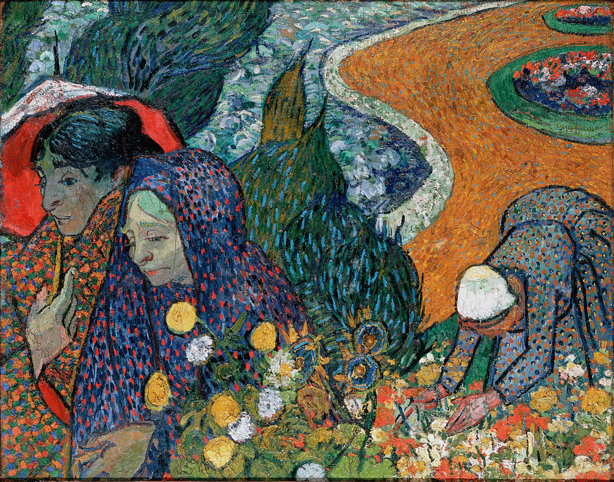

<head>
<meta charset="UTF-8" />
<meta name="keywords" content="drawing, painting" />
<meta name="description" content="drawings by Sunjy" />
<title>Sunjy</title>
<link rel="shortcut icon" type="image/x-icon" href="../../mImages/mCommon/favicon.ico" media="screen" />
<link rel="stylesheet" type="text/css" href="../../mCsses/mCommon/mCssA.css" />
<link rel="stylesheet" type="text/css" href="../../mCsses/mCommon/mCssB.css" />
<link rel="stylesheet" type="text/css" href="../../mCsses/mCommon/mCssC.css" />
<link rel="stylesheet" type="text/css" href="../../mCsses/mCommon/mCssD.css" />
<link rel="stylesheet" type="text/css" href="../../mCsses/mContent/mCssA.css" />
<link rel="stylesheet" type="text/css" href="../../mCsses/mContent/mCssB.css" />
<link rel="stylesheet" type="text/css" href="../../mCsses/mContent/mCssC.css" />
<link rel="stylesheet" type="text/css" href="../../mCsses/mContent/mCssD.css" />
</head>
<script type="text/javascript" src="../../mScripts/mContent/mContentAA.js" /></script>
<script type="text/javascript" src="../../mScripts/mContent/mContentAB.js" /></script>
<script type="text/javascript" src="../../mScripts/mContent/mContentAC.js" /></script>
<script type="text/javascript" src="../../mScripts/mContent/mContentAD.js" /></script>
<script type="text/javascript"></script> 
<script type="text/javascript">
document.write('<div class="mImgAbsolute"></div>');
/*
document.write('<p class="mFontSizeBColor" />From a white paper...</p>');
document.write('<table class="center"><tr><td>');
document.write('');
document.write('</td></tr></table>');
*/
</script>


<script type="text/javascript">
document.write('<p class="mFontSizeBColor" />Memory of the Garden at Etten</p>');
document.write('<p class="mFontSizeSColor" />“Memory of the Garden at Etten” by Vincent van Gogh depicts the artist’s mother and sister. The garden refers to the parsonage garden at Etten, now Etten-Leur, in the Netherlands, where Vincent’s father, a pastor, had been appointed.<br><br>Vincent’s father, Theodorus van Gogh, had been assigned to Etten as a pastor. Vincent spent periods there, notably from Easter to Christmas 1881, when he returned to join his brother Theo, an art dealer.<br><br>This period at Etten represents the beginning of Vincent’s ten-year career as an artist. He had returned to Etten intending to set up a studio there. However, that summer, Vincent became obsessed with his recently widowed cousin Kee Vos-Stricker, who had been invited to stay over the summer with her eight-year-old son Jan.<br><br>Vincent and Kee started taking pleasant walks together, and Vincent developed tender and romantic feelings. Within the fortnight Vincent proposed marriage. She famously rebuffed him and quickly left for Amsterdam and never wanting to deal with him again.<br><br>Vincent’s obsessive attempts to press his suit eventually became a matter of family scandal. He had a bitter quarrel with his father on Christmas Day and then left the family home to set up his proposed studio in The Hague instead.<br><br>Vincent subsequently painted in Nuenen, his previous family home, and Antwerp, before joining Theo in Paris in 1886. Finally, he set up a studio in 1888 at the Yellow House in Arles, where he was joined by Paul Gauguin, intending to form an artists’ commune.<br></p>');
document.write('<table class="center" /><tr><td>');
document.write('<br>Vincent’s father, Theodorus van Gogh, had been assigned to Etten as a pastor. Vincent spent periods there, notably from Easter to Christmas 1881, when he returned to join his brother Theo, an art dealer.<br><br>This period at Etten represents the beginning of Vincent’s ten-year career as an artist. He had returned to Etten intending to set up a studio there. However, that summer, Vincent became obsessed with his recently widowed cousin Kee Vos-Stricker, who had been invited to stay over the summer with her eight-year-old son Jan.<br><br>Vincent and Kee started taking pleasant walks together, and Vincent developed tender and romantic feelings. Within the fortnight Vincent proposed marriage. She famously rebuffed him and quickly left for Amsterdam and never wanting to deal with him again.<br><br>Vincent’s obsessive attempts to press his suit eventually became a matter of family scandal. He had a bitter quarrel with his father on Christmas Day and then left the family home to set up his proposed studio in The Hague instead.<br><br>Vincent subsequently painted in Nuenen, his previous family home, and Antwerp, before joining Theo in Paris in 1886. Finally, he set up a studio in 1888 at the Yellow House in Arles, where he was joined by Paul Gauguin, intending to form an artists’ commune.<br>" />');
document.write('</td></tr></table>');
</script>


